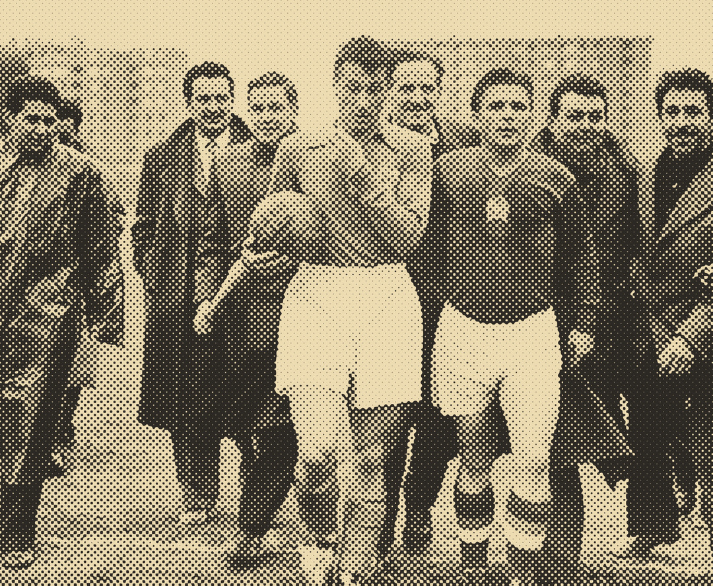
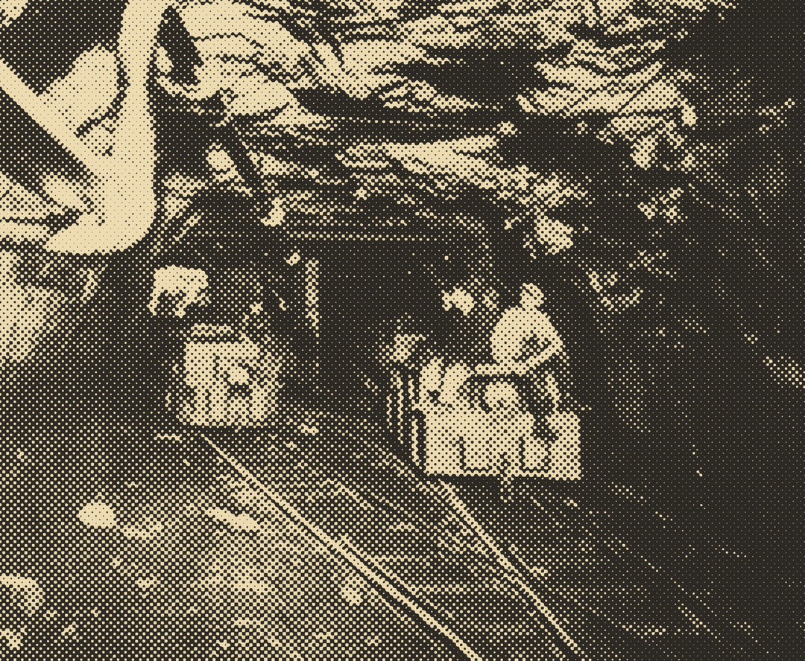
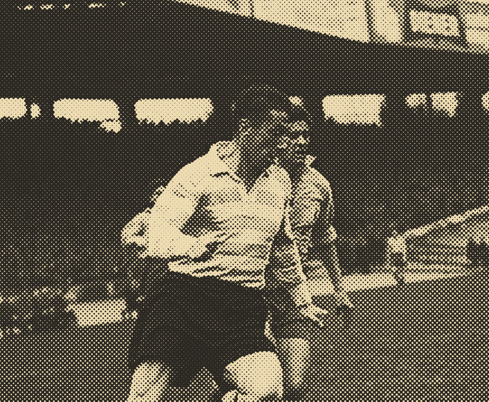
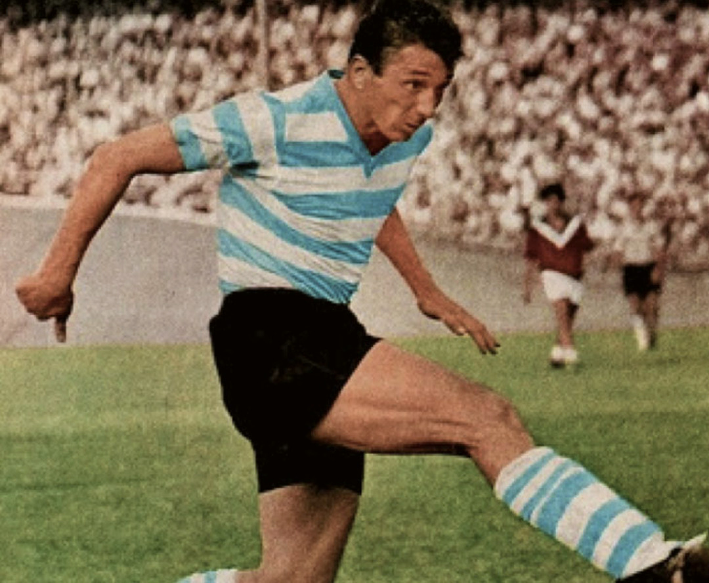
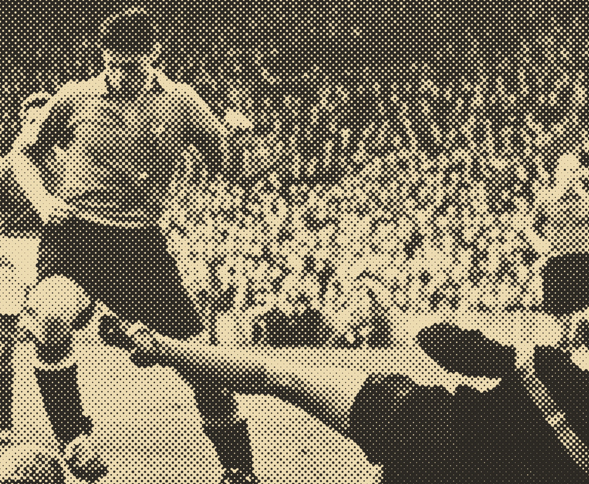
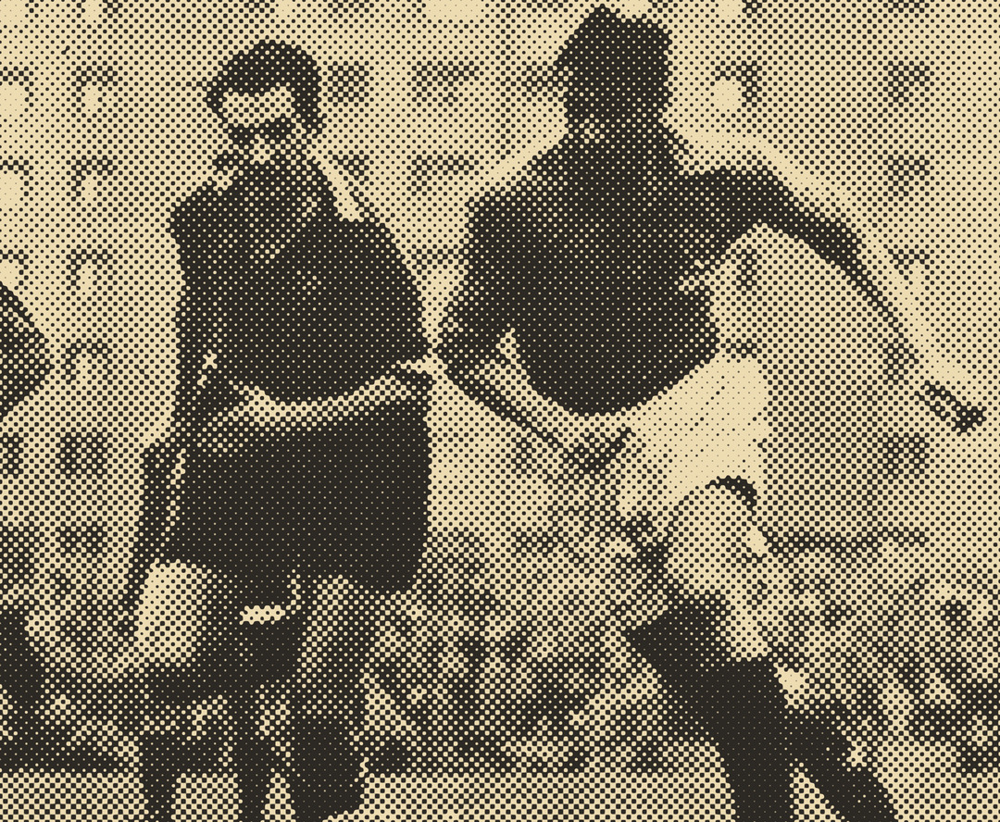
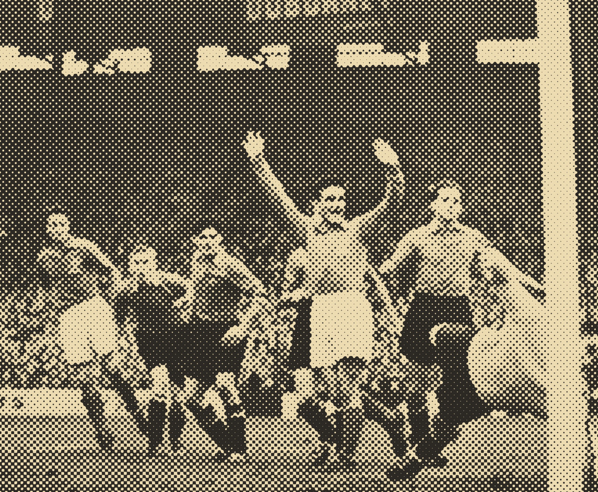
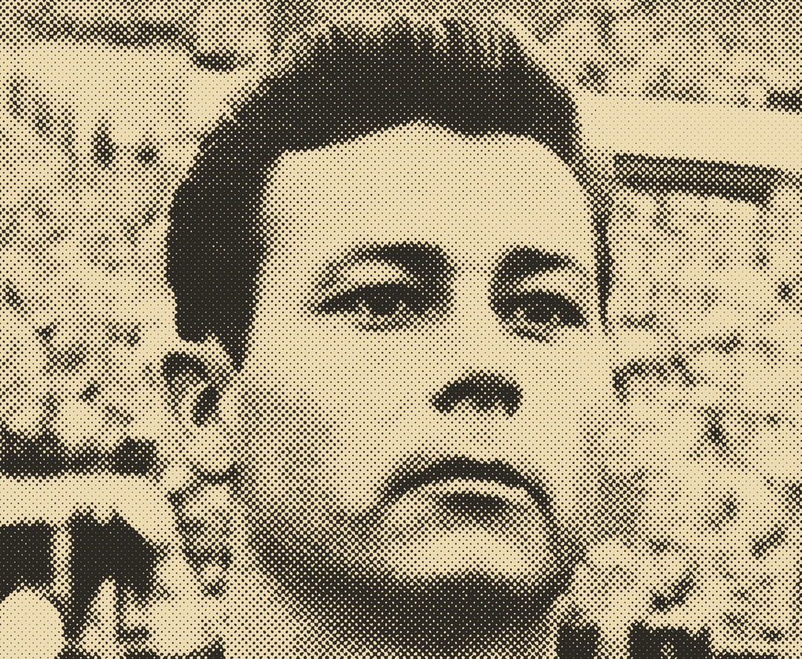
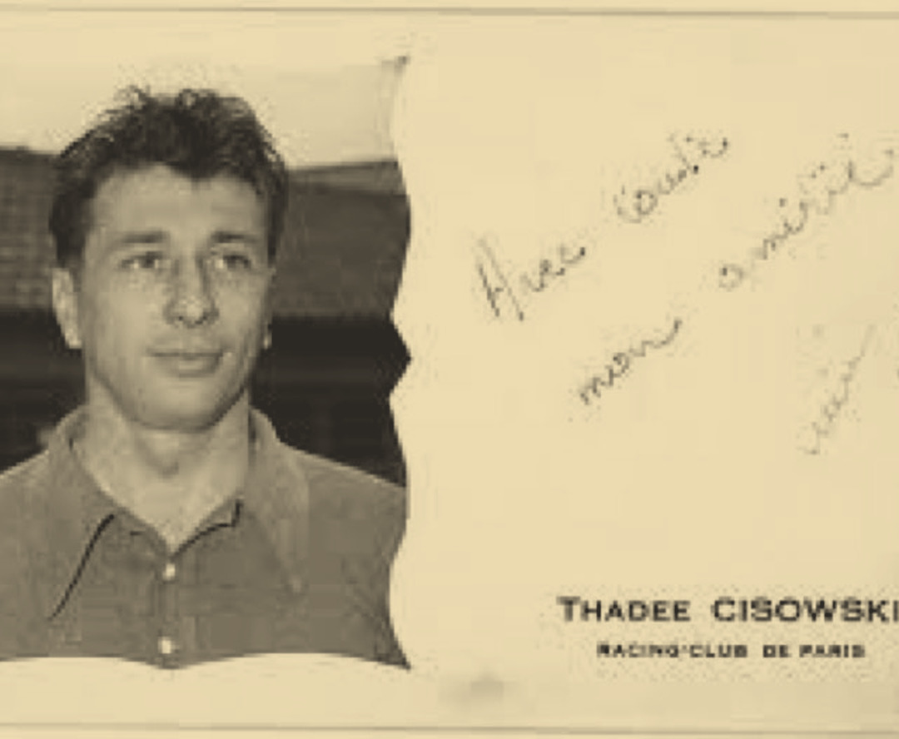

CISOWSKI, BALLON EN MAIN, ET PUSKÁS · 1956

THADÉE CISOWSKI · RACING CLUB DE PARIS

MINE DE LA MOURIÈRE, PIENNES · ANNÉES 1930

CISOWSKI AVEC LE RACING · ANNÉES 1950

AVEC LE RACING CLUB DE PARIS · PHOTO COLORISÉE

FRANCE-BELGIQUE, 11 NOVEMBRE 1956 · MIROIR SPRINT

FRANCE-BELGIQUE, 11 NOVEMBRE 1956 · MIROIR SPRINT

FRANCE-BELGIQUE, 11 NOVEMBRE 1956 · MIROIR SPRINT
CISOWSKI SOUS LE MAILLOT BLEU · 1956

JUST FONTAINE · VIGNETTE PANINI

CARTE DÉDICACÉE DE THADÉE CISOWSKI
1·2
une·deux
@UNE.DEUX
CE JOUR LÀ · 11 NOVEMBRE 1956
5 BUTS EN UN MATCH
AVEC LES BLEUS.
ZÉRO COUPE DU MONDE.
THADÉE CISOWSKI.
NÉ EN POLOGNE.
FILS DE MINEUR.
À 14 ANS,
IL DESCEND AU FOND.
1951.
PREMIÈRE SÉLECTION.
9E MINUTE :
JAMBE CASSÉE.
IL REVIENT.
1956.
MEILLEUR BUTEUR
DU CHAMPIONNAT.
FRANCE – BELGIQUE.
UN BUT.
DEUX.
TROIS.
QUATRE.
CINQ.
LES BLEUS FILENT
VERS LE MONDIAL 1958.
1958 : BLESSÉ, ENCORE.
LE MONDIAL SE JOUE
SANS LUI.
UN AUTRE AVANT-CENTRE
Y MARQUE 13 BUTS.
JUST FONTAINE.
IL MEURT EN 2005.
SON RECORD, LUI,
TIENT DEPUIS 70 ANS.
1·2
une·deux
@UNE.DEUX
FOLLOW
RESTE DANS
LE JEU
Une histoire de foot oubliée, tous les jours.